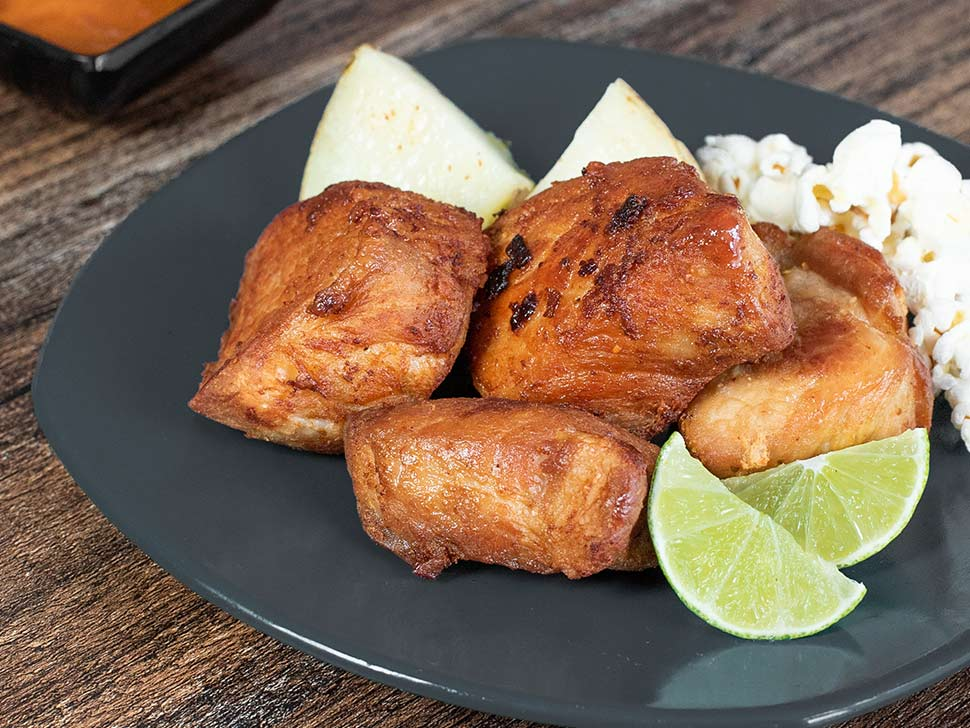
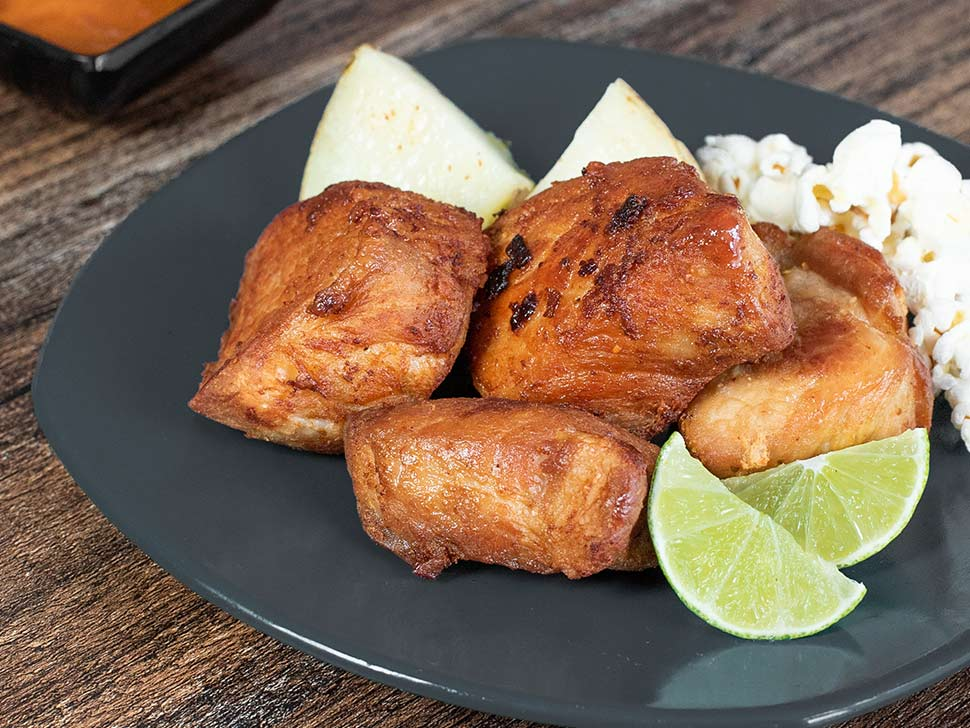
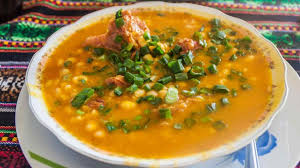
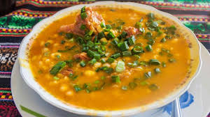

Turismo Nariñense
Nariño, ubicado en el suroeste de Colombia, es un departamento rico en cultura, historia y paisajes naturales impresionantes. A continuación, te presento un recorrido por algunos de sus destinos turísticos más destacados:
- Santuario de Las Lajas: Considerado una joya arquitectónica y religiosa, este santuario está construido sobre un cañón del río Guáitara, cerca de Ipiales. Su estilo gótico y su ubicación lo convierten en un lugar de peregrinación y admiración.
- Laguna de La Cocha: Este es el segundo cuerpo de agua natural más grande de Colombia, ubicado a 2.800 metros sobre el nivel del mar. Sus aguas tranquilas y paisajes circundantes ofrecen una experiencia de serenidad y conexión con la naturaleza.
- Volcán Galeras: Uno de los volcanes más activos de Colombia, el Galeras se encuentra cerca de la ciudad de Pasto. Aunque su actividad limita el acceso, las vistas panorámicas desde puntos seguros son impresionantes.
- Isla de La Corota: Situada en el centro de la Laguna de La Cocha, esta pequeña isla es una reserva natural que alberga una diversidad de flora y fauna, siendo un paraíso para los amantes de la naturaleza.
- Playa de Tumaco: Conocida como la "Perla del Pacífico", Tumaco ofrece playas de arena suave y una rica cultura afrocolombiana. Es ideal para quienes buscan sol, mar y una inmersión en las tradiciones locales.
- Pasto: La capital de Nariño es famosa por su arquitectura colonial y el Carnaval de Negros y Blancos, festividad reconocida por la UNESCO como Patrimonio Cultural Inmaterial de la Humanidad.
- Reserva Natural "La Planada": Este es un destino ideal para el ecoturismo, ofreciendo senderos que atraviesan bosques nubosos y la oportunidad de observar una gran variedad de aves y plantas endémicas.


Estos destinos reflejan la diversidad y riqueza cultural y natural de Nariño, ofreciendo experiencias únicas para todo tipo de viajeros.
Comida Típica
La gastronomía del departamento de Nariño es una rica mezcla de tradiciones indígenas y mestizas, influenciada por su proximidad a Ecuador y su diversidad geográfica. A continuación, se destacan algunos de los platos y bebidas más representativos de la región:
- Cuy Asado: Este plato emblemático consiste en la preparación del cuy (conejillo de indias) asado a la parrilla, generalmente acompañado de papas criollas, mote (maíz blanco cocido) y una salsa de maní. La carne del cuy es tierna y jugosa, ofreciendo un sabor único.
- Frito Pastuso: También conocido como fritada, este plato incluye carne de cerdo frita, acompañada de papas, maíz tostado y plátano maduro. Es una muestra de la influencia andina en la cocina nariñense.
- Empanadas de Pipián: Estas empanadas están rellenas de una mezcla de papa y maní, conocidas como pipián, y se sirven con una salsa de ají. Son una delicia tradicional en la región.
- Quimbolitos: Similar a los tamales, los quimbolitos son masas de maíz rellenas de queso o dulce, envueltas en hojas de achira y cocidas al vapor. Son una muestra de la herencia culinaria compartida con Ecuador.
- Locro: Esta sopa espesa, elaborada con papas y queso, es un plato reconfortante típico de las zonas andinas de Nariño.
- Lapingachos: Tortillas de papa rellenas de queso, que se sirven con chorizo, huevo frito y ensalada. Son una muestra de la versatilidad de la papa en la cocina nariñense.
 
 

Sector económico Nariñense
El departamento de Nariño, ubicado en el suroccidente de Colombia, posee una economía diversificada con sectores clave que contribuyen significativamente a su Producto Interno Bruto (PIB). La economía de Nariño se caracteriza por su diversidad sectorial, con una fuerte base agropecuaria complementada por sectores como la construcción, el comercio y los servicios, cada uno aportando al desarrollo económico del departamento:
- Sector Agropecuario
- Construcción
- Administración Pública y Defensa
- Comercio
- Turismo
- Transporte
- Servicios Sociales, Comunales y Personales
A pesar de estos avances, Nariño enfrenta desafíos en términos de competitividad. En el Índice Departamental de Competitividad 2024, el departamento se ubicó en la posición 21, lo que indica áreas de mejora y oportunidades para fortalecer las capacidades empresariales, la productividad y las pequeñas y medianas empresas (PYMES) de la región.